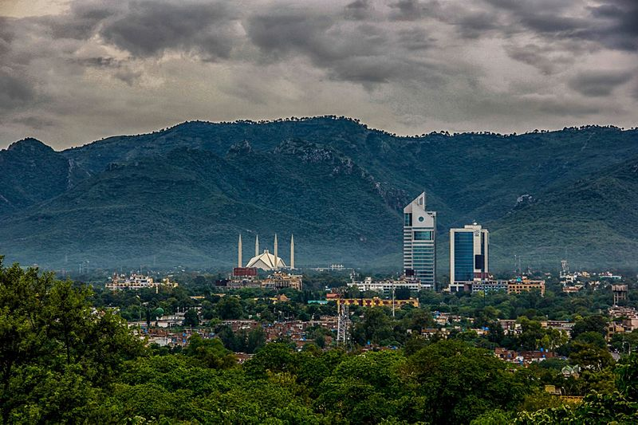

Travel Stories
-

Madrid
El Retiro Park
This park is the most beautiful urban park I have ever seen. My AirBnB sat right on the edge of El Retiro, and I made a point each day to spend time walking in and around it's lovely green spaces. In fact, I spent one entire afternoon meandering the grounds, taking photographs, and people watching.The park comes alive on the weekends: well-intentioned locals can be seen jogging on it's many paths, and young children are in the playgrounds or riding their scooters.
-

Islamabad
Our Trip started from Islamabad in Mid-October, we had to visit Naran and Saif ul Malook, we reached Naran after a short drive, took jeeps from there, had an easy 45 min off-road drive, and reached Saif ul Malook, I had been there many times but every time Saif ul Mlaook gave a new sensation, the lake is exceedingly clear and pure, it was statute still, beautiful and delightful. The Snow-capped Mountains and their shadow in crystal clear lake made its serenity. We had a night stay in Batakundi which had lovely views.
-

London
There are so many ways to see London! For the complete experience, I recommend you try as many different means of transport as you can during your London trip. Hop-on hop-off buses are extremely popular and are a great way to see the city and major attractions.
-

Tokyo
“Our Japan trip was amazing! The first day was a travel day, and we took a flight down to Dallas, where we then flew into Tokyo. After we landed at the airport, went through immigration, and finished up customs, we all met our tour guide, Taku-san, for the first time! He was probably one of my favorite parts of the trip as a whole. The entire group loved Taku-san because he gave us a ton of useful information, but he made it interesting and fun.
-
Istanbul
It took us a long time to get to Turkey. Back at the beginning of the millennium, Istanbul and Turkey were high on our must-see list of destinations. We’d picked up a guide book and everything. But then we decided to start a new business and signed a lease on office space on September 10, 2001. Yup, the day before 9-11. That’s another story, but in the meantime, we weren’t doing a lot of travel. Slow forward. A decade later, we were on the loose again, and Turkey kept calling to us. It’s at the crossroads of the world and we love intersections. It’s packed with ancient history. It sounds exotic, but is relatively safe to travel. And a bonus: it’s a nice escape from the European Union when your 90 days in Schengen countries are tapped out. We arrived in Istanbul for the first time in November of 2011
-

Milan
One of the things I loved most about visiting Milan were the people. I found them quite friendly, hospitable and warm. The language barrier was not a problem at all as the people I met either tried to patiently listen to my bad attempt at speaking Italian and try to decipher what I was trying to communicate to them or they just looked around for someone who could speak better English to help.
-

Toronto
Today you’ll journey to Niagara Falls, one of the most amazing wonders of the world. Upon arrival you’ll Journey Behind the Falls where elevators descend 150 feet through bedrock to tunnels that lead to viewing portals behind the massive sheet of water, then on to the Upper and Lower Observation decks at the foot of the Falls.
-

Munich
Spend your first day in Munich's Old Town, right in the city's centre. Munich's Old Town, also referred to as Altstadt, is the city's historic core and is home to numerous attractions. Old Town was first established as a small village on the banks of the Isar River in the Middle Ages. The community expanded over time, and by the 14th century, it had become the Duchy of Bavaria's capital as well as a significant trading hub.
-

Miami
It's a place where the sun meets the sea, and the parties never stop. This city has a lifestyle unlike any other. Sizzling beaches, high-end restaurants, dazzling nightlife, and glitzy shopping centers have created an aura that sets Miami apart from every other city.
-

Sydney
The Blue Mountains allure walkers with epic bush-clad vistas and hidden valleys with prehistoric forests. You'll find the Hawkesbury River region, and to Sydney's south Royal National Park, both offer spectacular walking with water views. The Central Coast stretches north with uncrowded surf beaches and inlets rich with sea birds. And the Hunter Valley is blessed with leafy country roads dotted with producers of fine wine, chocolates and cheese.